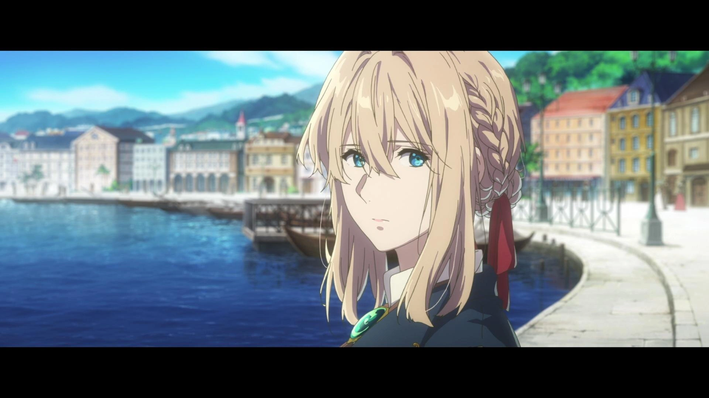
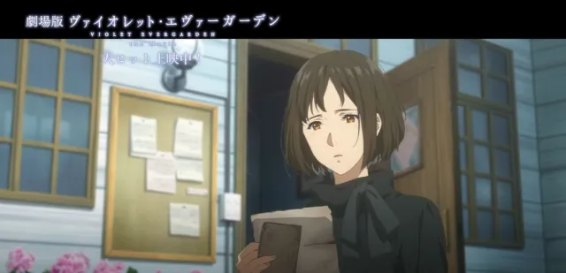
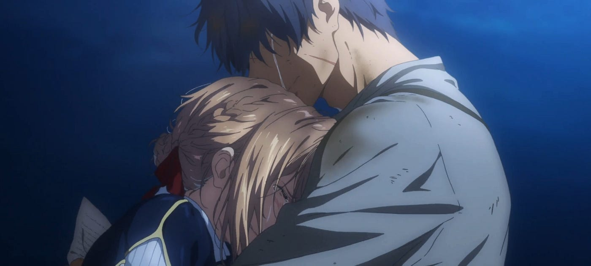

Violet Evergarden - The Movie
Después del funeral de su abuela Ann, Daisy Magnolia y sus padres regresan a la mansión de su abuela. Daisy, enojada con sus padres por decidir volver al trabajo de inmediato, sale corriendo al jardín. Encuentra una caja llena de cartas de su bisabuela a su abuela. Entre las cartas, encuentra un viejo recorte de periódico con la foto de una mujer: Violet Evergarden, la muñeca Auto Memories que ayudó a escribir estas cartas. La historia se remonta a muchos años antes de que naciera Daisy, cuando la construcción de la torre de radio está casi terminada y el teléfono comienza a popularizarse. Leiden está celebrando un festival de acción de gracias hacia el mar. Violet fue elegida para escribir el himno al mar ese año, que es leído en voz alta por la diosa del mar, Irma Fliech. Después de la ceremonia, el alcalde, que fue quien la recomendó para el papel, elogia su poema.
A pesar de todos sus logros, incluido el juramento público por la ascensión del rey Damián, Violet se siente melancólica debido a sus sentimientos no resueltos por Gilbert. Violet y los otros empleados de CH Postal Company se encuentran con Erica en un mercado callejero. Erica se había convertido en aprendiz de Oscar Webster y les pide que vayan a ver su primera obra. Más tarde esa noche, Violet escribe otra carta a Gilbert, todavía con la esperanza de que le llegue algún día. El fin de semana, visita la tumba de la Sra. Bougainvillea para ponerle flores. Allí se encuentra con Dietfried. Él sigue siendo hostil hacia ella y le dice que se olvide de Gilbert, pero ella le dice que no puede hacer eso mientras viva. Después de que Violet regresa a la compañía postal, recibe una llamada telefónica de un niño que quiere contratar una muñeca. Él le pide que vaya al hospital donde está internado.
Galeria


